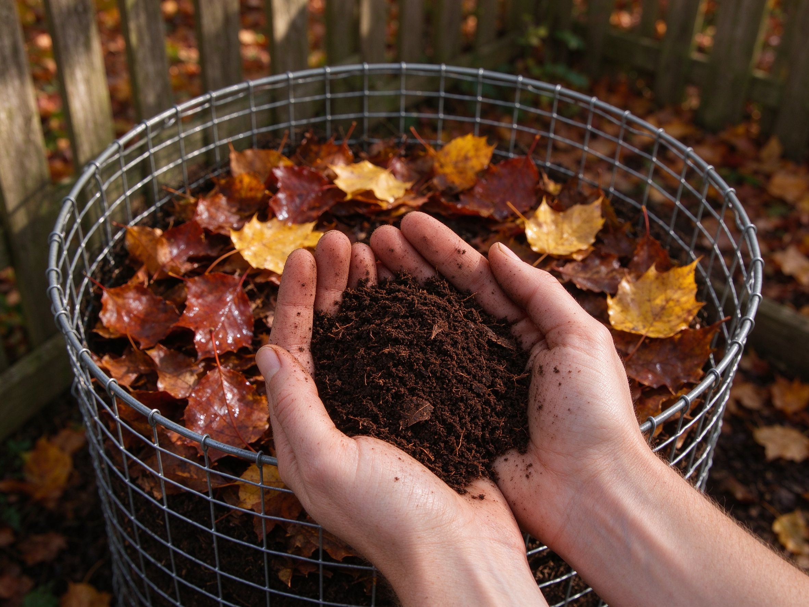

Leaf Mold: The Free Soil Amendment Hiding in Your Autumn Leaves
Every autumn, most gardens generate their best soil amendment and then throw it away in a paper bag at the curb. Leaf mold — leaves left to break down into a soft, spongy, dark brown material — costs nothing, needs no bin, no scraps, no turning, and no recipe. It just needs leaves, moisture, and time. Here's how to make it, and why it's worth the wait.
What Leaf Mold Actually Is (and Isn't)
Leaf mold is not compost. Compost is a fast, hot, bacterial process juiced along by kitchen scraps and greens; leaf mold is a slow, cool, fungal process that works on carbon alone. Leaves are mostly lignin and cellulose — tough stuff that bacteria are bad at, and fungi are good at. Give fungi leaves and damp conditions and they'll dismantle the pile over a year or two, leaving a crumbly material that smells like a forest floor.
Two consequences follow, and both matter:
- Leaf mold is low in nutrients. Most of the nitrogen was pulled back out of the leaves by the tree before they dropped. So it isn't a fertilizer — it's a soil conditioner. Think structure, moisture, and biology, not feeding.
- It's almost foolproof. No greens-to-browns ratio, no turning schedule, no smell if it goes anaerobic. Pile leaves, wet them, wait. The failure mode is mostly "it's slower than you hoped."
Why Bother, When Leaves Are Free Anyway?
Because leaf mold does something compost struggles to: it holds water. Its structure is spongy and open, so it absorbs and releases moisture instead of letting it run straight through sandy soil or bounce off clay. Dig a handful into a bed and you'll feel the difference — it's light and springy, not dense.
Where it earns its keep:
- Sandy soil — increases water and nutrient holding without adding weight.
- Clay soil — opens tight structure and improves drainage when used as a surface mulch, where worms and roots work it in for you.
- Seed starting and potting mixes — a classic ingredient in homemade mixes, alone or with compost and sand, because it holds moisture evenly.
- Mulch around perennials, shrubs, and trees — mimics what forests already do, and it's the cheapest mulch you will ever spread.
Which Leaves to Use — and Which to Skip
Most leaves are fine. Differences are mainly about speed.
- Fast: maple, ash, linden, fruit-tree leaves. Shredded, these can break down in under a year.
- Slow but excellent: oak, beech, hornbeam. Tough leaves make the best-structured leaf mold, but expect two years or more. Oak's reputation for being "acidic" is real for raw leaves, but finished leaf mold is close to neutral — a mulch of it won't meaningfully shift your soil pH.
- Skip or handle with care: evergreen and hedge clippings (very slow, waxy), leaves from diseased trees (roses with black spot, for instance — bin those rather than piling them), and any leaves you suspect were sprayed with weedkiller, since residues can survive composting and damage next year's plants.
Three Ways to Make It
1. The wire bin (best for volume)
Make a cylinder or square of chicken wire or hardware cloth, roughly 1 m across, in a corner out of the wind. Fill it with leaves, water each layer as you go so the pile is damp like a wrung-out sponge, and top it up as more leaves fall. Check it every few months; if it's bone dry, water it. That's the entire method. A second bin started a year later gives you a steady supply.
2. The bag method (best for small gardens)
Fill black trash bags with damp leaves, poke a few holes for air and drainage, tie them, and stash them behind a shed or under a deck. The black plastic holds moisture and warmth, and the bags stack neatly. Label them with the year — it's easy to forget which bag is ready. Leaves in bags typically break down in 12–18 months.
3. Shred first, and halve the wait
Whole leaves mat into water-repellent layers and decompose slowly. Run over them with a lawn mower (bagging attachment on, or just mow them into a windrow on the lawn) before piling. Shredded leaves stay aerated, absorb water, and can finish in a single season in a warm climate. This one step is the difference between "leaf mold in two years" and "leaf mold next fall."
Reading the Pile: When Is It Done?
Leaf mold passes through recognizable stages, and each stage has a use:
- Year one: leaves are still identifiable but soft, crumpled, and starting to gray with fungal threads. Use this as a rough mulch around shrubs — it's already better than bare soil.
- Year two: fragments, crumbly texture, dark brown, earthy smell. This is the good stuff: top-dress beds, dig into potting mixes, mulch perennials.
- Year three and beyond: a fine, almost peaty material. Sieve it and use it in seed-starting mixes or as a top dressing for containers.
How to Use It
- As mulch: 5–8 cm over beds, around perennials, and under shrubs. Keep it a few centimeters back from stems and trunks.
- As a soil amendment: spread 2–3 cm and let worms and roots incorporate it. No digging required — this pairs naturally with no-till gardening.
- In potting mixes: roughly one part sieved leaf mold to one part compost and one part grit or sand for a free-draining, moisture-holding mix. Test it on a few pots before committing a whole tray.
- As a lawn top dressing: a thin layer raked into thin turf improves moisture retention without smothering grass.
Common Mistakes
- Piling leaves thickly on the lawn and forgetting them. A deep, wet mat smothers turf. Mow them in, or rake them into beds and bins.
- Letting the pile dry out. Dry leaves barely decompose. Moisture is the one variable you control.
- Adding kitchen scraps to "speed it up." That turns your leaf pile into a compost pile with a bad carbon ratio — and often a smelly one. Keep it leaves-only.
- Expecting fertilizer. Leaf mold improves soil, it doesn't feed plants. Pair it with compost and, if your soil is poor, a soil test.
Start a pile this week with whatever is on your lawn. It's the least expensive thing you can do for next year's garden, and the work is almost entirely done by fungi you never have to hire.